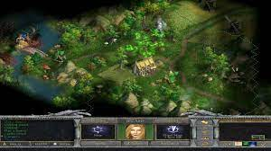
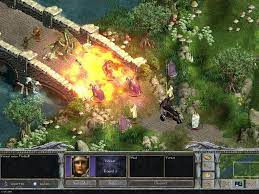
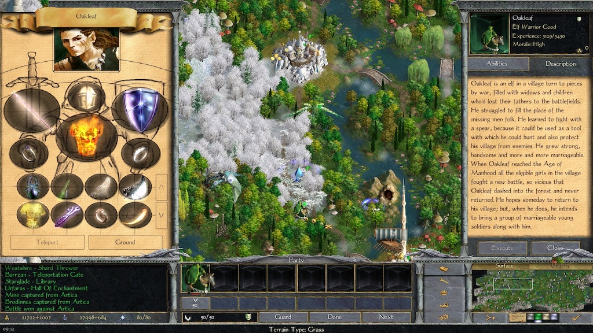

Сюжет
Сюжет данной игры является продолжением предыдущих, в нем
рассказывается о том, как войны среди магов открыли вход в
потусторонний мир, именуемый тенью.
Главными персонажами
Age of wonders:Shadow magic являются раннее известные Мерлин, а также
брат с сестрой Джулия и Меандор.
Однако помимо хорошо известным игрокам персонажей из предыдущей истории имеются также и совершенно новые, многие из которых наши друзья.

Помимо новых союзников
имеются и новые враги, главные из которых недалекий император
Фобиус, который ищет способ истребить всех магов, вместо того,
чтобы объедениться с ними против демонов теней, а также лидер
демонов по прозвищу Всепоглотитель, которых вывел свои войска за
пределы родного мира и хочет пработить другие народы.
Расы в игре
Всего в игре насчитывается 15 рас различных гуманоидов. Все они
делятся на 3 типа в зависимости от мировзрения:добрые, нейтральные
и злые.
Добрые расы:
- Архонты
- Эльфы
- Гномы
- Хоббиты
- Сироны
- Люди
- Кочевники
- Фростлинги
- Драконийцы
- Тиграны
- Орки
- Гоблины
- Темные эльфы
- Нежить
- Демоны тьмы
Каждая раса обладает уникальным набором юнитов, большинство из которых
в свою очередь имеют уникальные навыки.
Также каждая раса отличается
от остальных какой-то особенностью, например гномы имеют сильный
ближний бой и опасные боевые машины, драконийцы имеют самых сильных
летающих юнитов, а эльфы и темные эльфы обладают сильными
магическими способностями.
Магия
В игре имеются 7 сфер магии, 6 из которых можно выбирать, а седьмая
уже имеется по умолчанию. Каждая из сфер включает в себя 4 уровня
магии, чем выше уровень, тем сильнее заклинание.
Типы сфер магии:
- Огонь
- Вода
- Воздух
- Земля
- Свет
- Тьма
Сферы также как и расы имеют свои особенности, так, например
сфера огня в основном используется для того, чтобы испепелять
противников, сфера тьмы ослаблять врагов и воскрешать мертвецов,
а сфера света усиливать и исцелять своих.
Геймплей

Age of wonders:Shadow magic это пошаговая стратегия в которой
нам предстоит одолеть своих противников сражаясь с ними в двух
режимах: стратегическом и тактическом.
В целом игра во многом
похожа на популярные Герои меча и магии, однако имеет ряд отличий,
главным из которых является то, что количество войск строго
лимитировано и одна фигурка в отряде это один единственный воин.
В игре мы путешествуем по трем измерениям, поверхности,
подземелью и тени, каждое из которых имеет свои особенности.

Помимо юнитов есть также и герои, которые вначале из себя ничего не представляют, но набравшись опыта и надев на себя легендарные артефакты ставновятся машинами для убийства.
В геймплее есть два момента, которые отличают данную игру от других TBS. Первый, это то, что стоящие рядом отряды на глобальной карте будут вместе сражаться на тактической карте, и не важно, свои они или вражеские.Вторая особенность это то, что в игре есть линия огня, и если перед целью атаки кто-то стоит, то летящий снаряд может попасть в него, а не в намеченую цель.